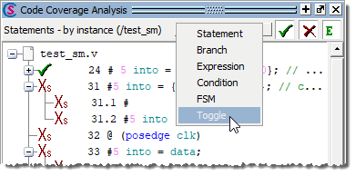
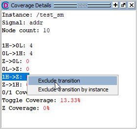

Questa SIM allows
you to exclude individual logic transitions from toggle coverage
statistics.
Procedure
- Open the Code Coverage Analysis and Coverage
Details windows.
- Select to
open the Coverage Analysis window.
- Select to open
the Coverage Details window.
- Select the Toggle coverage
type in the toolbar of the Code Coverage Analysis window.
Figure 1. Select Toggle Coverage Type
With test_sm selected
in the Structure (sim) window, the Code Coverage Analysis now displays
all toggles, by instance, for test_sm.
- Select the addr signal
in the Code Coverage Analysis window to display all logic transitions
for that signal in the Coverage Details window.
- Exclude the 1H->Z transition from toggle coverage
statistics the next time the simulation is run.
- Right-click the 1H->Z transition.
- Select Exclude transition from
the popup menu. (Figure 2)
Figure 2. Select Exclude transition
And ‘E’ will appear next to the transition to
indicate that it is now excluded.
- Unexclude the 1H->Z transition you just excluded.
- Right-click the 1H->Z transition.
- Select Unexclude transition from
the popup menu.